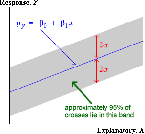
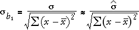
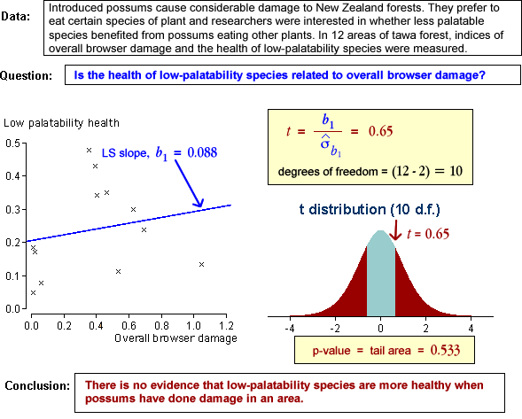
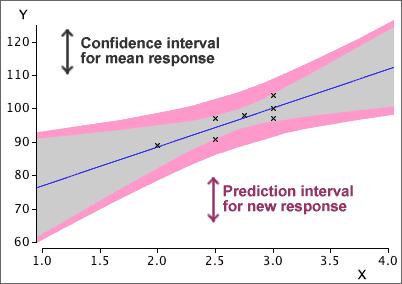
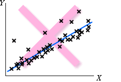
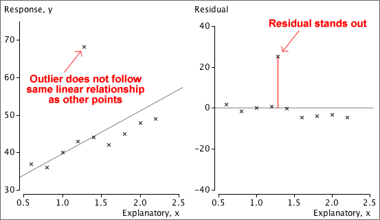
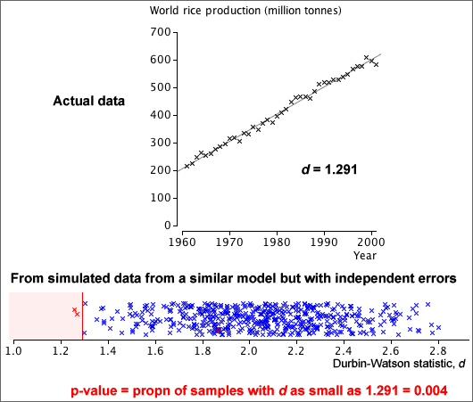

If you don't want to print now,
Bivariate data: population or sample?
In most bivariate data sets, we have no interest in the specific individuals from which the data are collected. The individuals are 'representative' of a larger population or process, and our main interest is in this underlying population.
Example
Data were collected by biologists from 15 lakes in central Ontario to assess how zinc concentrations in an aquatic plant were related to zinc concentrations in the lake sediment.
Band containing about 95% of values
Applying the 70-95-100 rule of thumb to the errors, about 95% of them will be within 2 standard deviations of zero — i.e. between ±2σ.
Since the errors are vertical distances of data points to the regression line, a band 2σ on each side of it should contain about 95% of the crosses on a scatterplot of the data.

Slope and intercept
A normal linear model,
μy = β0 + β1x
σy = σ
involves 3 parameters, β0, β1 and σ. The model's slope, β1, and intercept, β0, can be interpreted in a similar way to the slope and intercept of a least squares line.
Examples of interpretation
| Context | Interpretation of β1 | Interpretation of β0 |
|---|---|---|
| Y = Yield of wheat per acre X = Fertiliser (kg per m2) |
Increase in mean yield per acre for each additional kg/m2 of fertiliser | Mean yield per acre if no fertiliser is used |
| Y = Exam mark X = Hours of study by student before exam |
Increase in expected mark for each additional hour of study | Expected mark if there is no study |
| Y = Hospital stay (days) X = Age of patient |
Average extra days in hospital per extra year of age | Average days in hospital at age 0. Not particularly meaningful here. |
Least squares
In practical situations, we must estimate β0, β1 and σ from a data set that we believe satisfies the normal linear model.
The best estimates of β0 and β1 are the slope and intercept of the least squares line, b0 and b1
Since b0 and b1 are functions of a data set that we assume to be a random sample from the normal linear model, b0 and b1 are themselves random quantities and have distributions.
Simulated example
The diagram below represents a regression model with a grey band. A sample of 20 values has been generated from this model and the least squares line (shown in blue) has been fitted to the simulated data. The least squares line provides estimates of the slope and intercept but they are not exactly equal to the underlying model values.

In practice, the slope and intercept of the regression line are unknown, so the errors are also unknown values, but the least squares residuals provide estimates.

Estimating the error standard deviation
The third unknown parameter of the normal linear model, σ, is the standard deviation of the errors,
σ = st devn( ε )
σ can be estimated from the least squares residuals, {ei},

This is similar to the formula for the standard deviation of the residuals, but uses the divisor (n − 2) instead of (n − 1). It describes the size of a 'typical' residual.
Example

where sx is the standard deviation of X. Since σ is unknown, we must replace it with an estimate from the data to obtain a numerical value for the standard error,

Example

In practice, we must replace σ in the formula for the standard error with an estimate (based on the sum of squared residuals),

so the constant 1.96 must be replaced by a larger value from the t distribution with (n - 2) degrees of freedom.
A 95% confidence interval for the slope is

Most statistical software will evaluate b1 and its standard error for you when you fit a normal linear model, so it is fairly easy to evaluate the confidence interval in practice — you will not need to use any of the formulae above!
Example
For the example on the previous page, the least squares estimate of the slope and its standard error were:
b1 = 9.27, se (b1) = 1.42
Since there were n = 9 data points, tn − 2 = t7 = 2.365, so a 95% confidence interval for the slope is

We are 95% confident that the expected number of deaths per 100,000 is between 5.9 and 12.6 higher for each unit increase in the exposure index.
Properties of 95% confidence interval
Since a confidence interval for the slope, β1, is evaluated from random sample data, it will vary from sample to sample. In 95% of such samples, the 95% confidence interval will include the true population slope, but in 5% of samples it will not.
We cannot tell whether or not our single data set is one of the 'lucky' ones.
Simulation

where
The standard error of b1 is lowest when:
Implications for experimental design
To get the most accurate estimate of the slope from experimental data,
However if the spread of x-values is increased too much, the relationship may not be sufficiently linear for a linear model to be used.

Nonlinearity is a major problem, so it is important to be able to assess whether a relationship is linear. Don't just collect data at the ends of the 'acceptable' range of x-values, even though this maximises sx.

Does the response depend on X?
In a normal linear model, the response has a distribution whose mean, µy, depends linearly on the explanatory variable,
Y ~ normal (μy , σy)
If the slope parameter, β1, is zero, then the response has a normal distribution that does not depend on X.
Y ~ normal (β0 , σ)
This can be tested formally with a hypothesis test for whether β1 is zero.
Testing for zero slope
To assess whether the explanatory variable affects the response, we test the hypotheses
H0 : β1 = 0
HA : β1 ≠ 0
The test is based on how far the least squares slope, b1, is from zero. To assess this, we must take into account its standard deviation (standard error),

If we knew the value of σ, we could standardise b1 to get a test statistic,
standardised value, 
If β1 was really zero (H0), the probability of getting a least squares slope as far from zero as that recorded would be the p-value,

Unfortunately σ is usually unknown and the standard deviation of b1 must be estimated from the sample data. We therefore use a test statistic of the form
t ratio, 
and refer to a t distribution with n - 2 degrees of freedom to find the p-value.

The p-value is interpreted in the same way as for other hypothesis tests — a p-value close to zero means that the sample slope is far enough from zero to be inconsistent with H0: β1 = 0.
Examples

The test statistic and the p-value therefore both depend on both r and the sample size, n. Increasing n and increasing r both result in a lower p-value.

Properties of p-value
P-values for testing whether a linear model's slope is zero have the same properties as p-values for other hypothesis tests. In particular,
When Y and X are not related (β1 = 0), it is still possible to get small p-values, suggesting that β1 is not zero. However there is only probability 0.01 of getting a p-value as low as 0.01 — it is unlikely but possible. Such a p-value is more likely if the variables are related so we interpret it as giving strong evidence of a relationship.
A normal linear model provides a response distribution for all X. With estimates for all three model parameters, we can obtain the approximate response distribution at any x-value, even if we have no data at that x-value.

A formula for the standard error on the right exists, but you should rely on statistical software to find its value.
95% prediction interval for a new individual's response
For prediction, a similar interval is used:

where k is greater than the corresponding standard error for the confidence interval. Statistical software should again be used to find its value.
Example
The diagram below shows 95% confidence intervals for the mean response at x and 95% prediction intervals for a new response at x as bands for a small data set with n = 7 values.

Constant standard deviation
The response may be more variable at some x than others.

Normal distribution for errors
The errors may have skew distributions.

Independent errors
When the observations are ordered in time, successive errors may be correlated.

Residual plots
The above problems may be evident in a scatterplot of the raw data, but a residual plot often highlights any problems.

Standardised residuals
The least squares residuals are estimates of the unknown errors and can be used in a similar way to give information about whether there is an outlier.


To help assess the residuals, we usually standardise them — dividing each by an estimate of its standard deviation.
| standardised residual = | e |
Large residuals pull very strongly on the line since they are squared in the least squares criterion. As a result, Outliers will strongly pull the least squares line towards themselves, making their residuals smaller than you might otherwise expect. Leverage If an outlier corresponds to an x-value near its mean, it usually will have a large residual,  If successive residuals are similar, d will be close to zero. An approximate p-value can be obtained from a computer, special statistical tables or with a simulation such as that below.  Warning If a linear model is used for a time series, but the relationship is actually nonlinear, successive residuals also tend to be similar and the Durbin-Watson statistic will also be small. An unusually small Durbin-Watson statistic can be caused by either serial correlation or nonlinearity. |